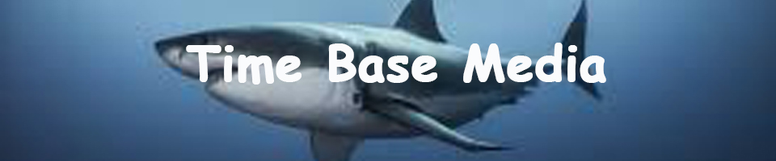

For my first animation project i made the shark a fearful animal by adding the classic theme song of JAWS and I made the shark fin very big in proportion to the boat. The two characters on the boat react funny to give my storyline a little more humor.